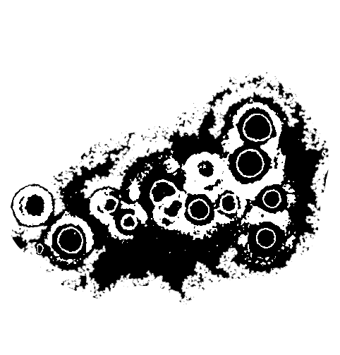
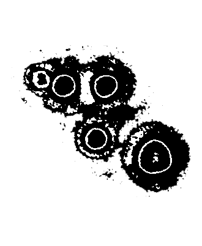
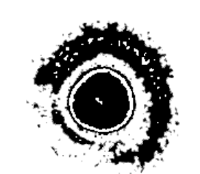

★
Logocentrifugal 74 - Roman "Not enough food, and barely enough whisky" McClay
@Logocentrifugal
4.4k views August 26 2019
This is the second time Roman McClay has appeared on this podcast. He was my very first guest, and now he's also my 72nd guest.
Roman is about as fascinating as they make 'em, and he's spent the last years in the mountains of , writing, publishing and marketing (barely this) the novel Sanction. It is a tome unlike any other, and will likely remain as such forever.
It takes a very particular kind of man to write this kind of work, and a very particular kind of life too. After growing up as a and joining the cult, Roman found himself in a bit of trouble when he , which led him to remove himself from society and pour his very essence into Sanction.
In this conversation, we discuss the nature of reality on several distinct but interconnected levels, the nature and responsibility of true artists, we explore the possible reasons behind ignorance and conformity, and (though it seems impossible) a lot more.
There's a near zero likelihood that you'll come away from this conversation without questions and challenges to your assumptions, and that seems to be true of everything Roman McClay does.
It's a pleasure to call the man friend, and it's a pleasure to present my friend to you.



Lyndon Mcleod
Sanction
Denver Shootings
The Sun
Helen Zuman
NBC
Fox News
Roman Mclay Twitter